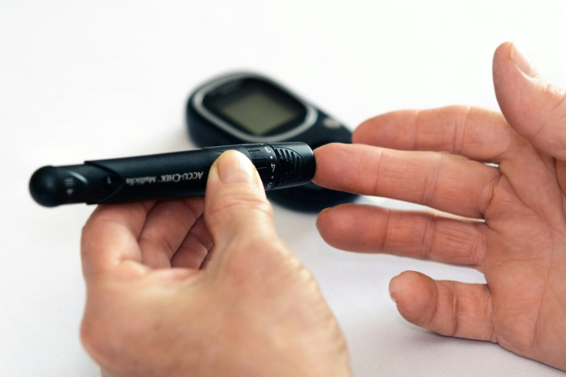
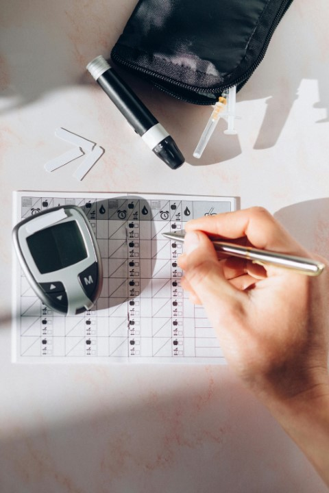

What is Type 1 diabetes?
An autoimmune disease, currently treatable, but still without a cure.
Basically, the body attacks itself by mistake, and this reaction destroys the cells in the pancreas that make insulin.
As a result, the pancreas does not make enough insulin or makes very little and insulin injections must be performed, daily, to stay alive and healthy as a Type 1 diabetic.
Type 1 diabetes is normally diagnosed as a teenager or in the early stages of adulthood. Diet and exercise are important but only insulin can help consistently regulate blood sugars in Type 1.
A person with Type 1 diabetes must constantly keep track of their blood sugars and provide a basal insulin rate as well as perform bolus injections of insulin at every meal. This involves counting carbohydrates of each item and administering insulin 15 minutes before eating meals. Most Type 1 diabetics require a manual finger poke, as well as insulin adjustments, at least 5 times a day. Once in the morning, once before breakfast, once before lunch, once before dinner, and again before bedtime. It is recommended to perform finger pokes on the sides of your fingers to not damage nerves located at the tips of your fingers. This will help to limit neuropathy caused from years of finger pokes.
 Many times doctors require logs of daily blood sugar checks for Insurance purposes and to better understand how the patient is coping with diabetes on a daily basis.
They want to know the date, time, blood sugar reading, what you ate, how many carbs, and how much insulin you administered.
When a miscalculation in carb / insulin ratio occurs, the logbook will help doctors understand how the basal or bolus rates may need to be adjusted.
Too much insulin can cause low blood sugars or hypoglocemia and too little insulin can cause high blood sugars or hyperglocemia.
High blood sugars not corrected over long periods of time can cause severe complications such as organ failure, loss of limbs and eyesight.
Low blood sugar can cause unconsciousness and even possible death if not immeditely treated.

What happens if you administer too much insulin?
Panic! - Pure Panic!
There are too types of insulin. Long acting for night time (such as Lantus) and rapid acting for daily meals and correction boluses (such as Novolog) The long acting insulin works at a slower rate than the rapid acting insulin and therefore is used at bed time to slowly keep blood sugars level during sleep. The fast acting insulin works at a total rate of about 2 hours time period after injection. It begins slowly working in approx 20 minutes after injection. Normally insulin useage is calculated by units of insulin per carbohydrates eaten. Example 1 unit of insulin for every 20 carbohydrates eaten. I once gave myself 10 units of rapid acting novolog on accident, before bedtime, insead of the long acting lantus insulin. Sadly, I was up all night, checking my sugar every few minutes and eating about 300 carbohydrates! I felt terrible the next day!
MORE INFORMATION FROM JDRF FOUNDATION: